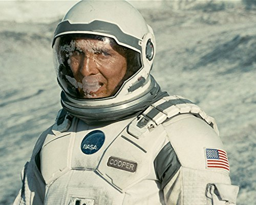

Mis reseñas
Interstellar (2014)
Director: Christopher Nolan
Reparto: Matthew McConaughey, Anne Hathaway, Jessica Chastain.

El secreto de sus ojos (2009)
Director: Juan José Campanella
Reparto: Ricardo Darín, Soledad Villamil, Guillermo Francella.

Million dollar baby (2004)
Director: Clint Eastwood
Reparto: Clint Eastwood, Hilary Swank, Morgan Freeman.

Taxi driver (1976)
Director: Martin Scorsese
Reparto: Robert De Niro, Cybill Shepherd, Jodie Foster.

Cidade de deus (2002)
Director: Fernando Meirelles, Kátia Lund
Reparto: Alexandre Rodrigues, Leandro Firmino, Phellipe Haagensen.

The broken circle breakdown (2012)
Director: Felix Van Groeningen
Reparto: Veerle Baetens, Johan Heldenbergh, Nell Cattrysse.
Nueva reseña
Mathilda es una niña de doce años que no se lleva bien con su familia, excepto con su hermano pequeño. Su padre es un narcotraficante que hace negocios con Stan, un corrupto agente de la D.E.A. (Departamento gubernamental contra las drogas). Un día, mientras Mathilda está en un supermercado, Stan mata a su familia. Se refugia entonces en casa de Léon, un solitario y misterioso vecino que resulta ser un asesino a sueldo, pero, como no le queda otra alternativa, hará un pacto con él: ella se encargará de las tareas domésticas y le enseñará a leer a Léon; éste, a cambio, le enseñará a disparar para poder vengarse de quienes mataron a su hermano.
Al ver que la vida en la Tierra está llegando a su fin, un grupo de exploradores dirigidos por el piloto Cooper (McConaughey) y la científica Amelia (Hathaway) emprenden una misión que puede ser la más importante de la historia de la humanidad: viajan más allá de nuestra galaxia para descubrir otra que pueda garantizar el futuro de la raza humana.

Benjamín Espósito es oficial de un Juzgado de Instrucción de Buenos Aires recién retirado. Obsesionado por un brutal asesinato ocurrido veinticinco años antes, en 1974, decide escribir una novela sobre el caso, del cual fue testigo y protagonista. Reviviendo el pasado, viene también a su memoria el recuerdo de una mujer, a quien ha amado en silencio durante todos esos años.

Después de haber entrenado y representado a los mejores púgiles, Frankie Dunn (Eastwood) regenta un gimnasio con la ayuda de Scrap (Freeman), un ex-boxeador que es además su único amigo. Frankie es un hombre solitario y adusto que se refugia desde hace años en la religión buscando una redención que no llega. Un día, entra en su gimnasio Maggie Fitzgerald (Hilary Swank), una voluntariosa chica que quiere boxear y que está dispuesta a luchar denodadamente para conseguirlo. Pero lo que más desea y necesita es que alguien crea en ella. Frankie la rechaza alegando que él no entrena chicas y que, además, es demasiado mayor. Pero Maggie no se rinde y se machaca cada día en el gimnasio, con el único apoyo de Scrap. Finalmente, convencido de la inquebrantable determinación de Maggie, Frankie decide entrenarla.

Para sobrellevar el insomnio crónico que sufre desde su regreso de Vietnam, Travis Bickle (Robert De Niro) trabaja como taxista nocturno en Nueva York. Es un hombre insociable que apenas tiene contacto con los demás, se pasa los días en el cine y vive prendado de Betsy (Cybill Shepherd), una atractiva rubia que trabaja como voluntaria en una campaña política. Pero lo que realmente obsesiona a Travis es comprobar cómo la violencia, la sordidez y la desolación dominan la ciudad. Y un día decide pasar a la acción.
El objetivo de Andrew Neiman (Miles Teller), un joven y ambicioso baterista de jazz, es triunfar en el elitista Conservatorio de Música de la Costa Este. Marcado por el fracaso de la carrera literaria de su padre, Andrew alberga sueños de grandeza. Terence Fletcher (J.K. Simmons), un profesor conocido tanto por su talento como por sus rigurosos métodos de enseñanza, dirige el mejor conjunto de jazz del Conservatorio. Cuando Fletcher elige a Andrew para formar parte del grupo, la vida del joven cambiará.

Basada en hechos reales, describe el mundo del crimen organizado en Cidade de Deus, un suburbio de Río de Janeiro, desde finales de los sesenta hasta principios de los ochenta, época durante la cual el tráfico de drogas y la violencia impusieron su ley en las favelas. A finales de los sesenta, Buscapé, un niño de 11 años tímido y sensible, observa a los niños duros de su barrio, sus robos, sus peleas, sus enfrentamientos diarios con la policía. Pero él sabe muy bien lo que quiere ser si consigue sobrevivir: fotógrafo. Dadinho, un niño de su edad que se traslada al barrio, sueña con ser el criminal más peligroso de Río de Janeiro y empieza su aprendizaje haciendo recados para los delincuentes locales. Admira a Cabeleira y su pandilla, que se dedican a atracar los camiones del gas. Un día Cabeleira le da a Dadinho la oportunidad de cometer su primer asesinato.

Narra la historia de amor entre Elise y Didier. Ella tiene una tienda de tatuajes, él toca el banjo en una banda. Es amor a primera vista, a pesar de sus diferencias. Él habla, ella escucha. Él es ateo y un ingenuo romántico. Ella tiene una cruz tatuada en el cuello, y los pies en el suelo. Su felicidad se completa con el nacimiento de la pequeña Maybelle. Pero la niña enferma a los seis años.